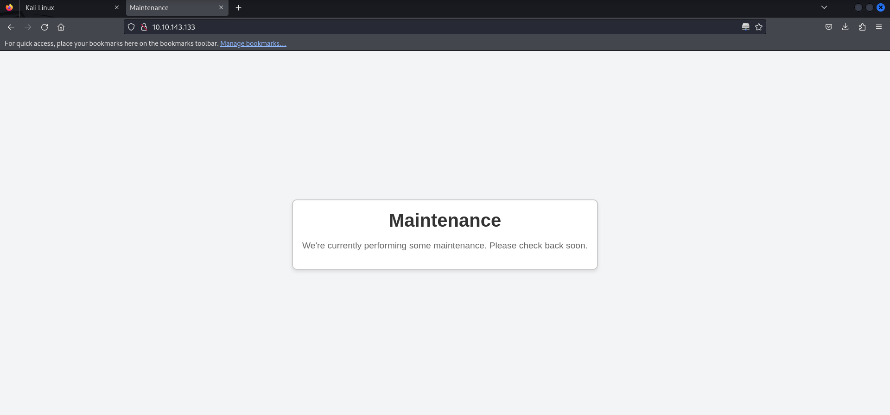
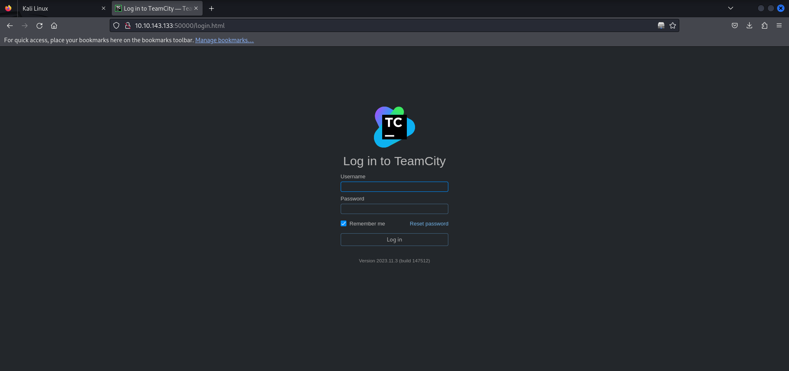
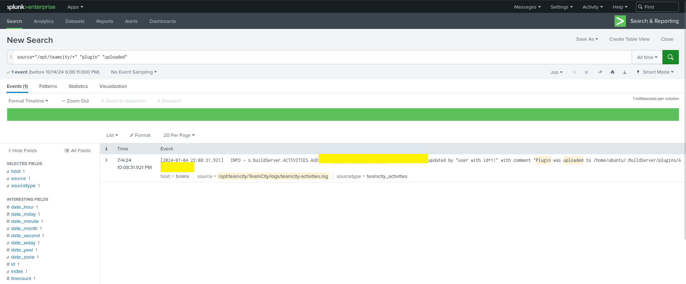

Brains | THM
This challenge has two interesting parts: offensive and defensive. Let's explore them together.
Offensive Part:
As usual, we need to check the ports and services on the target. Let's use Nmap:
nmap -sV -sC -p- 10.10.164.206
$ nmap -T4 -n -sC -sV -Pn -p- 10.10.143.133
Nmap scan report for 10.10.143.133
Host is up (0.090s latency).
Not shown: 65532 closed tcp ports (reset)
PORT STATE SERVICE VERSION
22/tcp open ssh OpenSSH 8.2p1 Ubuntu 4ubuntu0.11 (Ubuntu Linux; protocol 2.0)
| ssh-hostkey:
| 3072 20:db:de:8e:f2:10:09:16:55:59:a7:18:06:3b:66:db (RSA)
| 256 78:79:f3:1f:5e:ee:8d:65:3f:9e:42:d9:4f:60:09:63 (ECDSA)
|_ 256 5a:d0:1c:6d:c7:76:1d:5e:7a:c0:e7:bd:95:bf:fc:7d (ED25519)
80/tcp open http Apache httpd 2.4.41 ((Ubuntu))
|_http-title: Maintenance
|_http-server-header: Apache/2.4.41 (Ubuntu)
50000/tcp open ibm-db2?
| fingerprint-strings:
| GetRequest:
| HTTP/1.1 401
| TeamCity-Node-Id: MAIN_SERVER
| WWW-Authenticate: Basic realm="TeamCity"
| WWW-Authenticate: Bearer realm="TeamCity"
| Cache-Control: no-store
| Content-Type: text/plain;charset=UTF-8
| Date: Fri, 04 Oct 2024 23:37:31 GMT
| Connection: close
| Authentication required
| login manually go to "/login.html" page
We found 3 open ports with services:
- 22 (SSH)
- 80 (HTTP)
- 50000 (HTTP)
Let's check port 80:
We find that there's nothing important, just a message.
Let's check port 50000:
At http://10.10.143.133:50000 we find TeamCity Version 2023.11.3 (build 147512). As always, it's important to check for old vulnerabilities in this version that we can exploit for authentication bypass.
After some research, we found (CVE-2024-27198 and CVE-2024-27199). If you read about these CVEs, you'll find that we might have RCE capabilities.
Now, I want you to go search for an exploit for it and come back. Rely on yourself :)
Done?
Let's try to exploit it using this command:
python3 CVE-2024-27198-RCE/CVE-2024-27198-RCE.py -t http://10.10.143.133:50000Now we have RCE on the system and we can read the Flag. Of course, I won't tell you what it is, find it yourself.
Defensive Part:
Most TryHackMe challenges or CTFs in general focus on these steps but not in the same way. The approach varies from system to system, but remember they all follow the same concept. CTF challenges aren't exactly like real-world scenarios, but they're really powerful and will teach you a lot.
Now, we'll find port 8000 open for a service called "Splunk" This is a tool that helps us monitor and analyze data like Log Files and such. I'll ask you a question now, did something come to mind?? Think about it? We need to find three things in the defensive part:
- What's the username of who created the backdoor on the Server?
- What's the name of the malicious package installed on the Server?
- What's the name of the plugin installed on the Server?
1 - First Question:
For the username, we can write this command to see all users that were added, and surely the Hacker added themselves when they first compromised the system:
index* = "useradd"Or we can check a file you know well Know it?? You know it came to mind :) Can't we check /var/log/auth.log? If you don't know what this is, it's the file that logs login attempts, both successful and failed, and other things explained in another article - don't forget to check it out.
2 - Second Question:
What's the name of the malicious package installed on the Server?
source="/var/log/dpkg.log" "install"As we can see in the image, we found what the malicious package is, and I'll leave you to find it yourself.
3 - Third Question:
What's the name of the plugin installed on the Server? Same as before, we'll use this command to get all plugins that were uploaded:
source="/opt/teamcity/*" "plugin" "upload"Regarding the opt file, it contains all applications not native to the system, and it's short for "optional". We use it to load applications that don't come with the system itself, and I'll leave you to search by yourself. As we can see, we were able to find the result.